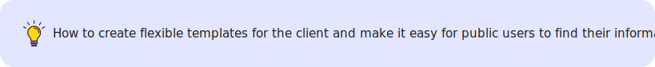
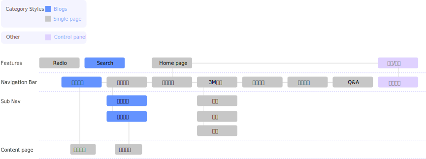
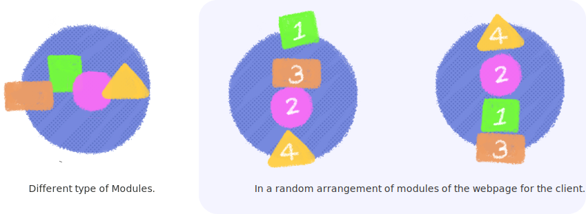

Role
- UI Designer
- Front-end
Deliverbles
- Research
- Infomation Architecture
- Wireframe
- Prototype
- Visual Design
Tools
- Sketch
- Zeplin
- Cacoo
- Visual Studio Code
Overviews
The Torch Church has been in existence for 13 years, and their number has grown from 200 to nearly 2,000. And the website needs to be updated again.
Problems
No centralized platform to share info and collaborate with community members
As a big community, ,the websites are currently too old, users cannot effectively obtain information from the official website. Beside, the website is mostly statics and have poor navigation.
Web flexibility
Due to their activities and a lot of information updates, the client want to add templates for themselves in the future, and can use them on any device.
Problem statment
Analysis
I am responsible for this page information architecture and design responsibility. Their official website has a huge amount of information, and the video is regularly updated every week and there are also multiple event information pages. I look forward to being able to build an effective website framework for them and to be able to operate on various devices.
Original Pages

The old official website has caused many problems. E.g.
- Unable to support various devices and cause difficulty for users.
- At present, the number of members has increased, and a member platform has been established to manage.
- Different activities and articles will be promoted in the future according to the age and identity of the members.
- The official website should have the function of a template, and the administrator can create a new page according to the page.
Main Features and structure
According to the official website article contains all the articles published by social media, I have defined several categories, 1.static articles, Video pages, Events, general information

Information Architecture
Me and my teammate defined 5 main features: knowledge-sharing, networking, events, projects and Community of Practice for VTT.
Ideas for Features
We started by discussing the planning of the entire site, and hope that customers can add different components to add new pages. Since I have previously executed CMS management projects before, and we also refer to many different examples, I personally studied it. For example: Ant design (link1), Bootstrap(link2), UI Pattern(link3). I really love the concept of Ant design.
The concept of which combine the random pages through different components and modules. So I discussed it with the design developer and sorted out the features that the new site needed. The following two are some of the key points of our design direction.
Design Process
At this stage, since I have work experience in front-end engineering before, this is a great help for me to make a design system. I also summarized the way of naming css. But for this design system, I can summarize two main directions; one is Grid Layout, the other is a module with different functions, and even can be used together.